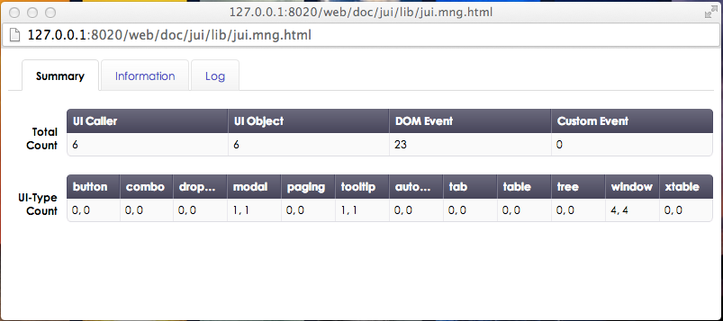
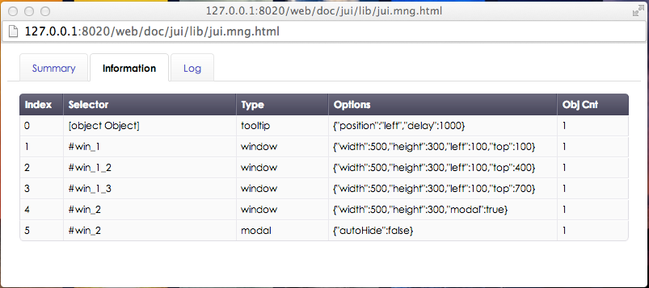
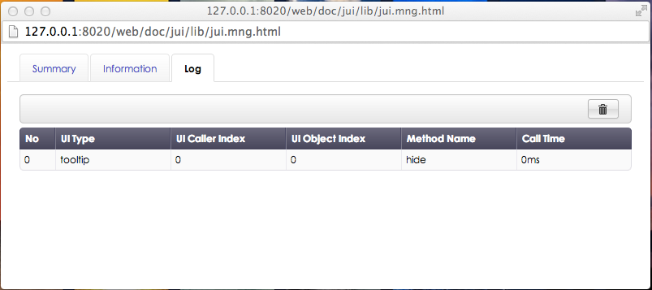

The JUI library provides a tool for viewing the basic information about the component object on the screen and checking in real time the time when a particular method of a component object was called. This also shows additional information such as the method implementation time.
A tab that displays the basic information about the components on the current page. UI Caller shows the number of component creating methods that have been called. The number of objects that were actually created can be seen using the UI Object. In more detail, as there is only one markup which has the tooltip_1 ID, the number of UI Callers is displayed to be identical to that of the UI Objects.
<span id="tooltip" title="Tooltip Message">Run</span>tooltip = ui.tooltip("#tooltip");
tooltip.show();However, if the code is as shown below, the number of UI Callers is 1 and the number of UI Objects is 2 as there are 2 markups with a tooltip class.
<span class="tooltip" title="Tooltip Message 1">Run</span>
<span class="tooltip" title="Tooltip Message 2">Run</span>tooltip = ui.tooltip(".tooltip");
tooltip[0].show();
tooltip[1].show();It is possible to find out how many DOM events and custom events provided by JUI are configured, also the number of objects created for each component.

It is possible to view detailed information such as the component creation type and options. Obj Cnt is the number of UI Objects mentioned above.

A log that is displayed in real time when calling an method exposed by UI Object. It is possible to find out which methods have been called most commonly and how long they took to run.
